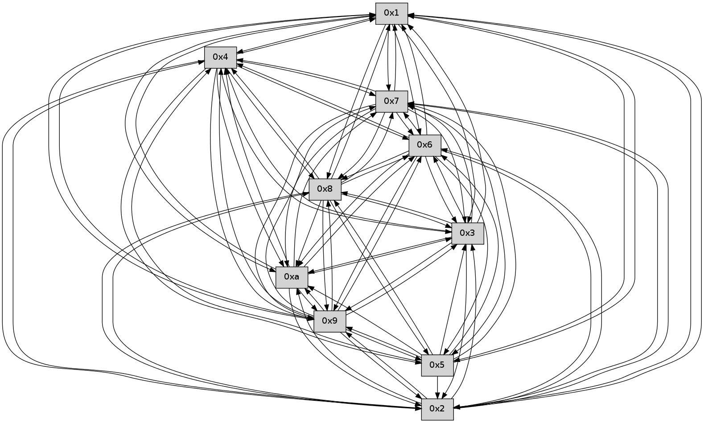

>> << IDX [start] -100 -25 -5 +0 +5 +25 +100 [450.451328993]
 Previous packets
445.004390 beacon0a(faad) #0 coord=01,02,03,04,05,06,07,0a,09,08 cycle=688.0ms assoc 64 14 bc
445.014391 beacon09(faad) #0 coord=01,02,03,04,05,06,07,0a,09,08 cycle=688.0ms assoc 64 9a 6b
445.024392 beacon08(faad) #0 coord=01,02,03,04,05,06,07,0a,09,08 cycle=688.0ms assoc 64 e0 26
445.035907 [Hello(1): seq=196 sym=4,2,9,5,10,3,8,6,7 sysInfo= stat=4:11,0,0,0/2:1,0,0,0/9:1,0,0,0/5:13,0,0,0/10:15,0,0,0/3:5,0,0,0/8:1,0,0,0/6:9,0,0,0/7:0,0,0,0]
445.039199 [Hello(6): seq=287 sym=2,3,5,4,7,9,8,10,1 sysInfo= stat=2:8,0,0,0/3:11,0,0,0/5:3,0,0,0/4:12,0,0,0/7:15,0,0,0/9:0,0,0,0/8:7,0,0,0/10:4,0,0,0/1:6,0,0,0]
445.050208 [Hello(7): seq=287 sym=2,3,5,6,4,8,9,10,1 sysInfo= stat=2:9,0,0,0/3:6,0,0,0/5:9,0,0,0/6:7,0,0,0/4:4,0,0,0/8:13,0,0,0/9:12,0,0,0/10:4,0,0,0/1:8,0,0,0]
----------------------------------------------------------------------
445.722537 beacon01(faad) #0 coord=01,02,03,04,05,06,07,0a,09,08 cycle=688.0ms assoc
-- color-indic=0 64 c9 f3
445.732521 beacon02(faad) #0 coord=01,02,03,04,05,06,07,0a,09,08 cycle=688.0ms assoc 64 5a c2
445.742520 beacon03(faad) #0 coord=01,02,03,04,05,06,07,0a,09,08 cycle=688.0ms assoc 64 20 8f
445.752520 beacon04(faad) #0 coord=01,02,03,04,05,06,07,0a,09,08 cycle=688.0ms assoc 64 57 65
445.762519 beacon05(faad) #0 coord=01,02,03,04,05,06,07,0a,09,08 cycle=688.0ms assoc 64 2d 28
445.772521 beacon06(faad) #0 coord=01,02,03,04,05,06,07,0a,09,08 cycle=688.0ms assoc 64 a3 ff
445.782520 beacon07(faad) #0 coord=01,02,03,04,05,06,07,0a,09,08 cycle=688.0ms assoc 64 d9 b2
445.792525 beacon0a(faad) #0 coord=01,02,03,04,05,06,07,0a,09,08 cycle=688.0ms assoc 64 a8 b9
445.802526 beacon09(faad) #0 coord=01,02,03,04,05,06,07,0a,09,08 cycle=688.0ms assoc 64 26 6e
445.812526 beacon08(faad) #0 coord=01,02,03,04,05,06,07,0a,09,08 cycle=688.0ms assoc 64 5c 23
445.823698 [Hello(4): seq=288 sym=5,7,6,2,3,9,8,10,1 sysInfo= stat=5:4,0,0,0/7:10,0,0,0/6:14,0,0,0/2:7,0,0,0/3:13,0,0,0/9:8,0,0,0/8:2,0,0,0/10:15,0,0,0/1:3,0,0,0]
445.827007 [Hello(5): seq=288 sym=7,6,4,3,1,9,8,10,2 sysInfo= stat=7:7,0,0,0/6:11,0,0,0/4:9,0,0,0/3:0,0,0,0/1:4,0,0,0/9:9,0,0,0/8:14,0,0,0/10:4,0,0,0/2:11,0,0,0]
445.830332 [Hello(3): seq=288 sym=1,7,6,2,4,8,9,10 sysInfo= stat=1:12,0,0,0/7:1,0,0,0/6:12,0,0,0/2:10,0,0,0/4:15,0,0,0/8:10,0,0,0/9:4,0,0,0/10:13,0,0,0]
445.832901 [Hello(9): seq=231 sym=5,2,3,4,7,6,8,10,1 sysInfo= stat=5:5,0,0,0/2:4,0,0,0/3:3,0,0,0/4:3,0,0,0/7:14,0,0,0/6:7,0,0,0/8:1,0,0,0/10:10,0,0,0/1:12,0,0,0]
445.835788 [Hello(8): seq=231 sym=5,2,3,4,7,6,9,10,1 sysInfo= stat=5:14,0,0,0/2:4,0,0,0/3:1,0,0,0/4:6,0,0,0/7:13,0,0,0/6:4,0,0,0/9:12,0,0,0/10:9,0,0,0/1:12,0,0,0]
445.844051 [Hello(10): seq=220 sym=6,3,2,9,8,7,4,1 sysInfo= stat=6:1,0,0,0/3:9,0,0,0/2:1,0,0,0/9:8,0,0,0/8:0,0,0,0/7:6,0,0,0/4:10,0,0,0/1:6,0,0,0]
445.847024 [Hello(2): seq=285 sym=4,7,6,3,9,8,10,1 sysInfo= stat=4:2,0,0,0/7:5,0,0,0/6:11,0,0,0/3:13,0,0,0/9:7,0,0,0/8:10,0,0,0/10:13,0,0,0/1:1,0,0,0]
----------------------------------------------------------------------
446.510670 beacon01(faad) #0 coord=01,02,03,04,05,06,07,0a,09,08 cycle=688.0ms assoc
-- color-indic=0 64 1d c6
446.520651 beacon02(faad) #0 coord=01,02,03,04,05,06,07,0a,09,08 cycle=688.0ms assoc 64 8e f7
446.530652 beacon03(faad) #0 coord=01,02,03,04,05,06,07,0a,09,08 cycle=688.0ms assoc 64 f4 ba
446.540653 beacon04(faad) #0 coord=01,02,03,04,05,06,07,0a,09,08 cycle=688.0ms assoc 64 83 50
446.550653 beacon05(faad) #0 coord=01,02,03,04,05,06,07,0a,09,08 cycle=688.0ms assoc 64 f9 1d
446.560653 beacon06(faad) #0 coord=01,02,03,04,05,06,07,0a,09,08 cycle=688.0ms assoc 64 77 ca
446.570653 beacon07(faad) #0 coord=01,02,03,04,05,06,07,0a,09,08 cycle=688.0ms assoc 64 0d 87
446.580657 beacon0a(faad) #0 coord=01,02,03,04,05,06,07,0a,09,08 cycle=688.0ms assoc 64 7c 8c
446.590639 beacon09(faad) #0 coord=01,02,03,04,05,06,07,0a,09,08 cycle=688.0ms assoc 64 f2 5b
446.600659 beacon08(faad) #0 coord=01,02,03,04,05,06,07,0a,09,08 cycle=688.0ms assoc 64 88 16
446.611855 [Hello(1): seq=197 sym=4,2,9,5,10,3,8,6,7 sysInfo= stat=4:12,0,0,0/2:2,0,0,0/9:2,0,0,0/5:14,0,0,0/10:0,0,0,0/3:6,0,0,0/8:2,0,0,0/6:10,0,0,0/7:1,0,0,0]
446.615151 [Hello(7): seq=288 sym=2,3,5,6,4,8,9,10,1 sysInfo= stat=2:10,0,0,0/3:7,0,0,0/5:10,0,0,0/6:7,0,0,0/4:5,0,0,0/8:14,0,0,0/9:13,0,0,0/10:5,0,0,0/1:8,0,0,0]
446.621996 [Hello(6): seq=288 sym=2,3,5,4,7,9,8,10,1 sysInfo= stat=2:9,0,0,0/3:12,0,0,0/5:4,0,0,0/4:13,0,0,0/7:0,0,0,0/9:1,0,0,0/8:8,0,0,0/10:5,0,0,0/1:6,0,0,0]
----------------------------------------------------------------------
447.298801 beacon01(faad) #0 coord=01,02,03,04,05,06,07,0a,09,08 cycle=688.0ms assoc
-- color-indic=0 64 a1 c3
447.308784 beacon02(faad) #0 coord=01,02,03,04,05,06,07,0a,09,08 cycle=688.0ms assoc 64 32 f2
447.318786 beacon03(faad) #0 coord=01,02,03,04,05,06,07,0a,09,08 cycle=688.0ms assoc 64 48 bf
447.328784 beacon04(faad) #0 coord=01,02,03,04,05,06,07,0a,09,08 cycle=688.0ms assoc 64 3f 55
447.338787 beacon05(faad) #0 coord=01,02,03,04,05,06,07,0a,09,08 cycle=688.0ms assoc 64 45 18
447.348785 beacon06(faad) #0 coord=01,02,03,04,05,06,07,0a,09,08 cycle=688.0ms assoc 64 cb cf
447.358785 beacon07(faad) #0 coord=01,02,03,04,05,06,07,0a,09,08 cycle=688.0ms assoc 64 b1 82
447.368788 beacon0a(faad) #0 coord=01,02,03,04,05,06,07,0a,09,08 cycle=688.0ms assoc 64 c0 89
447.378790 beacon09(faad) #0 coord=01,02,03,04,05,06,07,0a,09,08 cycle=688.0ms assoc 64 4e 5e
447.388789 beacon08(faad) #0 coord=01,02,03,04,05,06,07,0a,09,08 cycle=688.0ms assoc 64 34 13
447.403577 [Hello(10): seq=221 sym=6,3,2,9,8,7,4,1 sysInfo= stat=6:2,0,0,0/3:9,0,0,0/2:2,0,0,0/9:8,0,0,0/8:0,0,0,0/7:7,0,0,0/4:10,0,0,0/1:7,0,0,0]
447.406456 [Hello(3): seq=289 sym=1,7,6,2,4,8,9,10 sysInfo= stat=1:13,0,0,0/7:2,0,0,0/6:13,0,0,0/2:11,0,0,0/4:15,0,0,0/8:11,0,0,0/9:5,0,0,0/10:14,0,0,0]
447.413136 [Hello(9): seq=232 sym=5,2,3,4,7,6,8,10,1 sysInfo= stat=5:5,0,0,0/2:5,0,0,0/3:3,0,0,0/4:3,0,0,0/7:15,0,0,0/6:8,0,0,0/8:2,0,0,0/10:11,0,0,0/1:13,0,0,0]
----------------------------------------------------------------------
448.086935 beacon01(faad) #0 coord=01,02,03,04,05,06,07,0a,09,08 cycle=688.0ms assoc
-- color-indic=0 64 65 cd
448.096917 beacon02(faad) #0 coord=01,02,03,04,05,06,07,0a,09,08 cycle=688.0ms assoc 64 f6 fc
448.106917 beacon03(faad) #0 coord=01,02,03,04,05,06,07,0a,09,08 cycle=688.0ms assoc 64 8c b1
448.116918 beacon04(faad) #0 coord=01,02,03,04,05,06,07,0a,09,08 cycle=688.0ms assoc 64 fb 5b
448.126918 beacon05(faad) #0 coord=01,02,03,04,05,06,07,0a,09,08 cycle=688.0ms assoc 64 81 16
448.136919 beacon06(faad) #0 coord=01,02,03,04,05,06,07,0a,09,08 cycle=688.0ms assoc 64 0f c1
448.146919 beacon07(faad) #0 coord=01,02,03,04,05,06,07,0a,09,08 cycle=688.0ms assoc 64 75 8c
448.156924 beacon0a(faad) #0 coord=01,02,03,04,05,06,07,0a,09,08 cycle=688.0ms assoc 64 04 87
448.166923 beacon09(faad) #0 coord=01,02,03,04,05,06,07,0a,09,08 cycle=688.0ms assoc 64 8a 50
448.176923 beacon08(faad) #0 coord=01,02,03,04,05,06,07,0a,09,08 cycle=688.0ms assoc 64 f0 1d
448.188714 [Hello(6): seq=289 sym=2,3,5,4,7,9,8,10,1 sysInfo= stat=2:9,0,0,0/3:13,0,0,0/5:4,0,0,0/4:13,0,0,0/7:0,0,0,0/9:2,0,0,0/8:9,0,0,0/10:6,0,0,0/1:6,0,0,0]
448.194018 [Hello(1): seq=198 sym=4,2,9,5,10,3,8,6,7 sysInfo= stat=4:12,0,0,0/2:3,0,0,0/9:3,0,0,0/5:14,0,0,0/10:1,0,0,0/3:7,0,0,0/8:2,0,0,0/6:11,0,0,0/7:2,0,0,0]
448.204358 [Hello(7): seq=289 sym=2,3,5,6,4,8,9,10,1 sysInfo= stat=2:10,0,0,0/3:8,0,0,0/5:10,0,0,0/6:8,0,0,0/4:5,0,0,0/8:14,0,0,0/9:14,0,0,0/10:6,0,0,0/1:8,0,0,0]
----------------------------------------------------------------------
448.875066 beacon01(faad) #0 coord=01,02,03,04,05,06,07,0a,09,08 cycle=688.0ms assoc
-- color-indic=0 64 d9 c8
448.885049 beacon02(faad) #0 coord=01,02,03,04,05,06,07,0a,09,08 cycle=688.0ms assoc 64 4a f9
448.895047 beacon03(faad) #0 coord=01,02,03,04,05,06,07,0a,09,08 cycle=688.0ms assoc 64 30 b4
448.905050 beacon04(faad) #0 coord=01,02,03,04,05,06,07,0a,09,08 cycle=688.0ms assoc 64 47 5e
448.915048 beacon05(faad) #0 coord=01,02,03,04,05,06,07,0a,09,08 cycle=688.0ms assoc 64 3d 13
448.925050 beacon06(faad) #0 coord=01,02,03,04,05,06,07,0a,09,08 cycle=688.0ms assoc 64 b3 c4
448.935049 beacon07(faad) #0 coord=01,02,03,04,05,06,07,0a,09,08 cycle=688.0ms assoc 64 c9 89
448.945053 beacon0a(faad) #0 coord=01,02,03,04,05,06,07,0a,09,08 cycle=688.0ms assoc 64 b8 82
448.955054 beacon09(faad) #0 coord=01,02,03,04,05,06,07,0a,09,08 cycle=688.0ms assoc 64 36 55
448.965054 beacon08(faad) #0 coord=01,02,03,04,05,06,07,0a,09,08 cycle=688.0ms assoc 64 4c 18
448.979537 [Hello(10): seq=222 sym=6,3,2,9,7,4,1 sysInfo= stat=6:3,0,0,0/3:10,0,0,0/2:2,0,0,0/9:9,0,0,0/7:8,0,0,0/4:10,0,0,0/1:8,0,0,0]
448.982754 [Hello(8): seq=233 sym=5,2,3,4,7,6,9,10,1 sysInfo= stat=5:14,0,0,0/2:5,0,0,0/3:2,0,0,0/4:6,0,0,0/7:15,0,0,0/6:6,0,0,0/9:13,0,0,0/10:11,0,0,0/1:14,0,0,0]
448.987008 [Hello(3): seq=290 sym=1,7,6,2,4,8,9,10 sysInfo= stat=1:14,0,0,0/7:3,0,0,0/6:14,0,0,0/2:11,0,0,0/4:15,0,0,0/8:11,0,0,0/9:6,0,0,0/10:14,0,0,0]
448.991637 [Hello(2): seq=287 sym=4,7,6,3,9,8,10,1 sysInfo= stat=4:2,0,0,0/7:7,0,0,0/6:13,0,0,0/3:14,0,0,0/9:8,0,0,0/8:10,0,0,0/10:14,0,0,0/1:3,0,0,0]
448.995620 [Hello(5): seq=290 sym=7,6,4,3,1,9,8,10,2 sysInfo= stat=7:9,0,0,0/6:13,0,0,0/4:9,0,0,0/3:2,0,0,0/1:6,0,0,0/9:11,0,0,0/8:15,0,0,0/10:6,0,0,0/2:12,0,0,0]
----------------------------------------------------------------------
449.663199 beacon01(faad) #0 coord=01,02,03,04,05,06,07,0a,09,08 cycle=688.0ms assoc
-- color-indic=0 64 ed d0
449.673181 beacon02(faad) #0 coord=01,02,03,04,05,06,07,0a,09,08 cycle=688.0ms assoc 64 7e e1
449.683180 beacon03(faad) #0 coord=01,02,03,04,05,06,07,0a,09,08 cycle=688.0ms assoc 64 04 ac
449.693180 beacon04(faad) #0 coord=01,02,03,04,05,06,07,0a,09,08 cycle=688.0ms assoc 64 73 46
449.703181 beacon05(faad) #0 coord=01,02,03,04,05,06,07,0a,09,08 cycle=688.0ms assoc 64 09 0b
449.713182 beacon06(faad) #0 coord=01,02,03,04,05,06,07,0a,09,08 cycle=688.0ms assoc 64 87 dc
449.723184 beacon07(faad) #0 coord=01,02,03,04,05,06,07,0a,09,08 cycle=688.0ms assoc 64 fd 91
449.733187 beacon0a(faad) #0 coord=01,02,03,04,05,06,07,0a,09,08 cycle=688.0ms assoc 64 8c 9a
449.743187 beacon09(faad) #0 coord=01,02,03,04,05,06,07,0a,09,08 cycle=688.0ms assoc 64 02 4d
449.753188 beacon08(faad) #0 coord=01,02,03,04,05,06,07,0a,09,08 cycle=688.0ms assoc 64 78 00
449.768965 [Hello(1): seq=199 sym=4,2,9,5,10,3,8,6,7 sysInfo= stat=4:12,0,0,0/2:4,0,0,0/9:4,0,0,0/5:15,0,0,0/10:2,0,0,0/3:8,0,0,0/8:3,0,0,0/6:11,0,0,0/7:3,0,0,0]